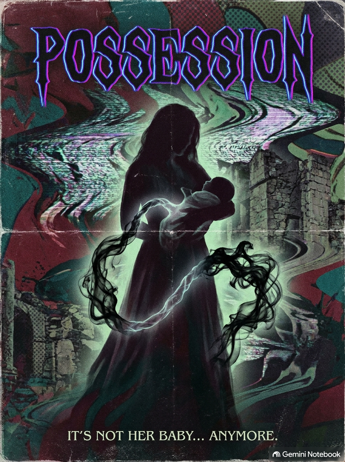

PELÍCULA 01 // TERROR POSEÍDO
POSSESSION (TM 1)
00:03:45:12
🎥 ⏹︎ ⏸︎ ▶︎ ⏺️
Grunge, Dark Pop, VCR Sound, Hard Drum & Bass, Sad Pop (118 BPM)
From your bloody body, my own body was torn
While your lips were screaming my name with such scorn
The shadows took over, possessed since a seed
Inheriting your blood, the scars and the pain
Black dust in my soul... Possessed.
[ INVISIBLE BOY // METRAJE 01 ]
Mi vida no empezó con una bienvenida, empezó como una herida que ella no quería cerrar. Cuando nací no escuché un arrullo; escuché mi propio nombre pronunciado como si fuera una maldición. No nací malo ni roto: creo haber sido infectado desde ese día. Ella vertió todo su veneno en mis venas y lo llamó "Amor de madre". Desde ese primer respiro supe que cargaría con su sombra hasta que el polvo negro se acabe por completo.